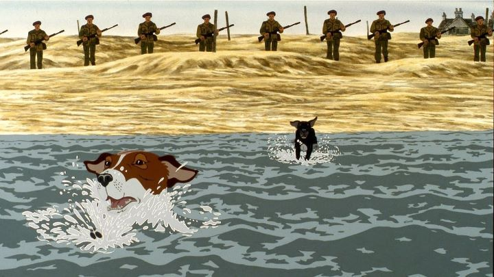

While cartoons are typically thought of as exclusively children's entertainment, there exist plenty of examples to the contrary. If not interesting in researching the wide array of thoughtful, violent and/or sexual content of Japanese anime, the next best source would be British animation. "Watership Down" is the most famous example, a stirring story of rabbits facing the harsh realities of the wild as they search for a new home. The film was successful enough for a spiritual successor to be developed: "The Plague Dogs," a 1982 film that, like "Watership Down," was also based on a novel by Richard Adams, and also adapted and directed by Martin Rosen.While "Watership Down" is considered a classic that most people will at least vaguely recognize, "The Plague Dogs" has been relatively obscure in culture. Part of that is simply it's availabilty: making it difficult to discover, and therefore making it difficult to create interest, the movie has long been out of print in physical media. After over a decade, Shout! Factory would release the film on Bluray in 2019. Another issue is the content: as dark as "Watership Down" was, "The Plague Dogs" goes even further, dealing with the subject of scientific experimentation on animals from the very first scene. It's a bit of the dark moments from "The Secret of NIMH," mixed with the grim and grounded realities of a film like "The Grave of the Fireflies." I would argue that "The Plague Dogs" is the darkest animated film I've ever seen, even compared to the company it shares. Some of it's scenes (both for violence, and purely to reduce runtime to make the movie more palpable) were cut from the original edit, resulting in the existance of a rare "director's cut" version with an extra 15 minutes of footage. Shout! Factory again comes to the rescue, providing both versions on their Bluray release (for the first time in North America), with the missing scenes added from Martin Rosen's personal copy.If you happen to be a dog lover, you will be horrified by the movie (as, reportedly, some initial viewers were when it was first released). Otherwise, while "The Plague Dogs" isn't as much of a classic as "Watership Down" is, much of the same themes and maturity in it's storytelling still exists. Therefore, it is an impressive film, disturbing as it might be.The hardest scenes to watch occur within the first 15 minutes, at the science lab. The opening shot is of a large black labrador, named Rowf, being forced to drown yet again to test his ability to improve how long he can last, only being brought out of the water by the "white coats" after he no longer moves. Exhausted, old Rowf talks wearily to his kettle neighbor Snitter, a younger dog subjected to experimental operations on his brain, causing him to hallucinate visions, and smell things that aren't there. "Why do they do it?" Rowf cries quietly. "We weren't bad..." By chance, Rowf discovers his pen wasn't locked properly that night, and he and Snitter quietly explore the lab facility to find their way out. The pass by rabbits, mice and monkeys, each locked up, attached to instruments of unknown function. When they finally do escape, it's through an incenerator, just moments before another dead dog was thrown in and the flame was turned on.These opening moments are a powerful statement. As cruel as it seems, animal experimentation exactly like this was common in the 1900's when "science" became more of a hyped-subject. It also became a common subject for some great dramatic-fiction of the era, and since then, animal activists have improved things (albiet not entirely fixed it). If anyone has any questions about animal rights are important, these scenes of the movie would convince anyone. However, it's the following part that's a bit more interesting, if a bit lacking in identity. Finally free in the wild, the two dogs are not quite certain how to proceed. Rowf is an old dog, seemingly never having had a human master, and distrusts all humans after his experience in the lab. But Snitter did once have a kind human master; by chance, his master was hit by a car and killed when trying to get Snitter off the road. Snitter's first plan is to find a "real" master, someone who is kind and able to care for them... but the lab is in the middle of nowhere, and human homes are no where in sight. When they finally do come across human life, paranoia and misunderstanding of the culture makes things worse for them. For most of the film, they rely on the help of a wild fox (who calls himself "The Tod"), and hunt sheep kept by shepards. This only makes things worse still, and when rumors spread that the scientists had lost dogs that had contagious diseases tested on them, it's only a matter of time before they are hunted down. An interesting note on the ending (SPOILDERS AHEAD): while the dogs' fate in the film is ambigious, and presumed to be tragic, the original ending in the book explicitly shows they are saved and live a happy life with humans (although some online sources also state the film's ending better matches Adams' original intended conclusion, before publishers insisted a different ending be written).  This isn't simply an advertisement to convice us to treat animals better. It's a complex story about the relationship between humans and dogs, and of life in general. As horrible and as unfeeling as the "white coats" in the lab seemed to be, Rowf and Snitter are completely lost outside. Their salvation relied on being rescued by "good" humans, who never come. When cold and starving outside at different intervals, they consider multiple times if they did the right thing to leave. Rowf notices his old body being less and less able to hunt and survive the cold weather, becoming more difficult to survive each day, "no different from the water in the lab" he remarks. Snitter's tragedies when near humans, mixed with his hallucinations, cause him to eventually go made, believing that his mind as the power to cause danger to the world, even if accidental. There's a lot to unpack here, and even if it treads similar characterizations and themes as "Watership Down," it is still excellent writing. The only grievance I have is the ending: it's an excellent (if tragic) ending, but the direction of the scene make it even more vague than it intended to be. Visuals are a bit of a weakness of "The Plague Dogs." It matches the syle of "Watership Down," perhaps with slightly improved animation. But that's really rough animation, workman-like and perfectly acceptable for the story, but not particularly taking any advantage of animation as a medium. And while "Watership Down" did have some inspired elements in the rabbit's culture and how to visualize it... "The Plague Dogs" feels much less inspired, despite some clever shots of human objects from the eyes of a dog. The old-fashioned British acting is excellent, if a bit difficult to understand on occasion due to accents and poor recording quality. There isn't much music involved (better to hear all the talking with less music), so the soundtrack again feels purely servicable. Regarding the "theatrical" and "director's" cuts of the movie; which one is best? "The Plague Dogs" is a bit of a long and slow movie, and while I was always invested in the characters, it couldn't hurt from a shorter runtime. But the cuts aren't exactly miniscule: several scenes scattered about the entire movie were missing, many of which include extra monologues about their situations in the wild, and depictions of their learning how to survive. There are even added title cards depicting the passage of time and how many days pass since that initial escape. Yes, there are a couple scenes of extra explicit violence, including closeups of sheep carcasses and such (and one infamous scene involving a human body), but the thearrical cut was already fairly shocking as it was. Curiously, the order of a few scenes were even changed, making viewing both versions an interesting experience. Ultimately, I didn't realize anything was missing until after watching the director's cut (so don't be too concerned if you saw one and not the other), but after having done so, I consider the director's cut to be the only proper way to experience the film. Thankfully, unlike most "restored from a filmmaker's personal VHS" examples, Shout! Factory's "director's cut" is of surprisingly decent quality, almost as much as the restored "theatrical" version they list as the main feature, so there isn't any reason now not to watch it.I like smart, introspective dramas, and animation allows animals to be an insightful subject to give us a new perspective. "The Plague Dogs" is haunting at times, and isn't easy to watch. If you have pet dogs, or love dogs in general, it could give you nightmares. And the visuals date it, making it clear it was made many decades ago. But it's a smart, important movie, and if you have already seen and enjoyed "Watership Down," this should be the next immediate film on your list.
- "Ani" More reviews can be found at : https://2danicritic.github.io/ Previous review: review_The_Place_Promised_in_Our_Early_Days Next review: review_The_Prince_of_Egpyt